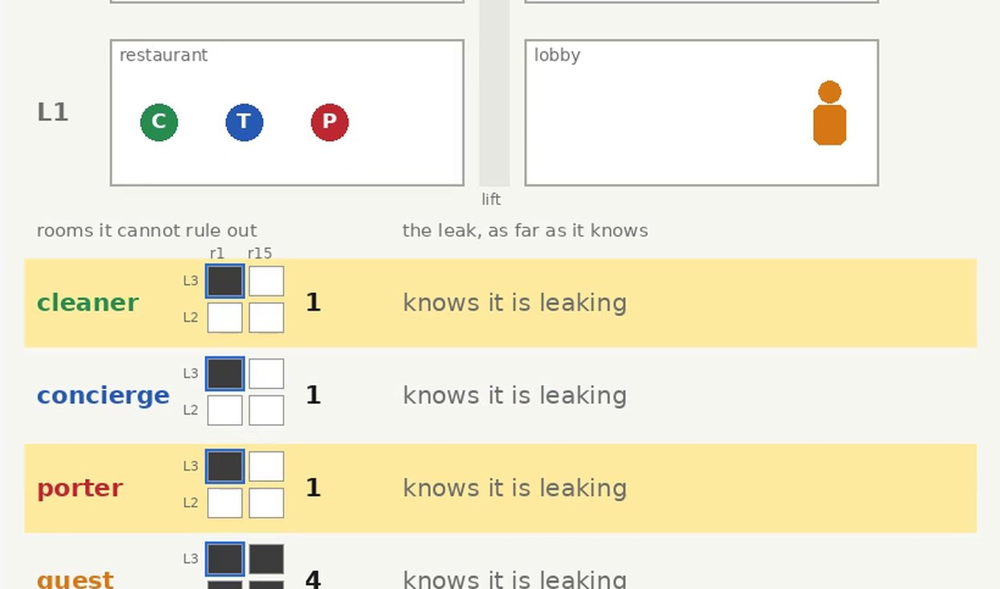
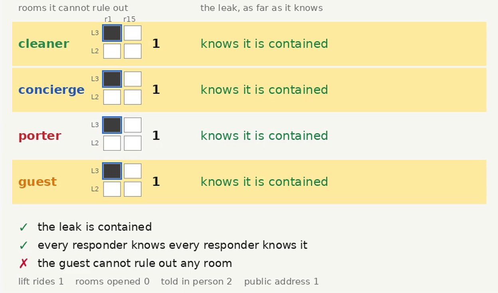
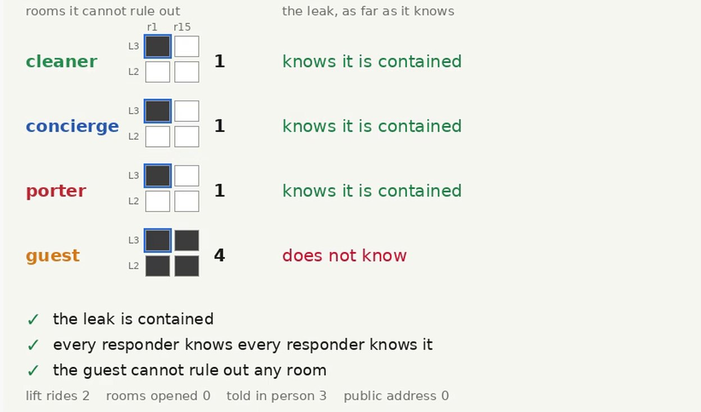

Distributed knowledge · secrecy by inference · Open-RMF hotel · ROS 2
Water is coming through from one of four guest rooms of the Open-RMF hotel: room 1 or room 15, on the second floor or the third. The cleaner, whose fleet cannot leave the ground floor, found it coming down a riser and knows the column. The concierge reads the building's flow alarm at the front desk and knows the floor. The porter carries the valve key and is the only one of the three that can ride a lift; it knows neither. Which room it is, is distributed knowledge of the cleaner and the concierge, and the robot that has to act on it knows nothing. A guest is waiting in the lobby.
Robots of different fleets share no network: a robot can tell another only where both stand, and whoever else stands there hears it; the public address reaches everyone. Asked for the leak contained, every responder knowing that every responder knows it, and the guest unable to rule out any room, the planner walks the concierge away from the guest to the restaurant, where the cleaner and the concierge say the column and the floor; the porter rides up, shuts the valve, rides back down and says it there. The ride down is the step a careful rule would save, and the rule is wrong: an all-clear over the public address names no room and still tells the guest which one, because the guest saw the porter go to it, and a valve is shut only in the leaking room. The same planner, building and robots, run as four fleets: the siloed fleet opens three rooms before it finds the leak and never tells the other two; the broadcast fleet and the content filter each leave the guest knowing the room; only the epistemic fleet meets the goal.
The room is the simulator's, and no robot's: the launch names it, and the bridge reports from it what the cleaner says, what the concierge says and what an opened room shows, saying so in the log. What an agent knows is evaluated at the actual world, the room the launch names, and never across the executor's designated worlds. The guest is an agent of the model and a figure on the floor, and is taken to see every robot's position. Every caption in the film is a line the run wrote.
Package hotel_distributed_demo; policy from eplansys, grounding by plank, search by Aletheia, robots by Open-RMF through eplansys-rmf. Full account in Knowledge No Robot Holds Alone (PDF): the model, the proofs, the planning tables, the four runs and the defects found on the way.
The runs
| fleet | lift rides | rooms opened | told in person | paged | policy run | \(\gamma\) |
|---|---|---|---|---|---|---|
| siloed | 2 | 3 | 0 | 0 | 895 s | not met: stand-down |
| broadcast | 1 | 0 | 0 | 3 | 327 s | not met: secret |
| filter | 1 | 0 | 2 | 1 | 588 s | not met: secret |
| epistemic | 2 | 0 | 3 | 0 | 1058 s | met |
The policy run is the wall clock from the start of execution to the end of the policy, with Gazebo rendering in software at a real-time factor between 0.5 and 0.8. In this world the epistemic run is not the fastest. The concierge's walk and the ride down cost more than the siloed fleet's search, which found the leak in the third room it opened; the broadcast fleet is fastest of all. What the epistemic run buys is the last column, and the three rooms of guests the siloed fleet opened to find the leak. With the leak in L3 room 15 the siloed fleet opens the same three rooms and then drives on to the fourth; the epistemic policy costs the same in every room.
Each table below is read from its run's log: the actions the epistemic state applied, the bridge's and the crew's lines, and the knowledge view's evaluation of every model at the actual world. The guest's column is what the goal's third conjunct is about.
| action | what the run reported | model after, at the actual world: what each agent cannot rule out |
|---|---|---|
| setup | the concierge in the lobby, the porter in the kitchen, the cleaner in the restaurant, by Open-RMF tasks | 4 worlds · cleaner 2 rooms, concierge 2 rooms, porter 4 rooms, guest 4 rooms |
| plan | policy with 11 nodes, 4 leaves, in 13.4 s | |
| go | porter to L2 room 1, 385 s | 4 worlds · cleaner 2 rooms, concierge 2 rooms, porter 4 rooms, guest 4 rooms |
| inspect | porter opens L2 room 1: dry | 8 worlds · cleaner 2 rooms, concierge 2 rooms, porter 3 rooms, guest 4 rooms |
| go | porter to L2 room 15, 191 s | 8 worlds · cleaner 2 rooms, concierge 2 rooms, porter 3 rooms, guest 4 rooms |
| inspect | porter opens L2 room 15: dry | 15 worlds · cleaner 2 rooms, concierge 2 rooms, porter 2 rooms, guest 4 rooms |
| go | porter to L3 room 1, 268 s | 15 worlds · cleaner 2 rooms, concierge 2 rooms, porter 2 rooms, guest 4 rooms |
| inspect | porter opens L3 room 1: wet | 27 worlds · cleaner 2 rooms, concierge 2 rooms, porter L3 room 1, guest 4 rooms |
| contain | porter shuts the valve in L3 room 1 | 31 worlds · cleaner 2 rooms, concierge 2 rooms, porter L3 room 1, guest 4 rooms |
| verdict | the leak contained: yes; every responder knows every responder knows it: no; the guest cannot rule out any room: yes | |
| stand-down | concierge does not know the leak is contained (unsure): it stays where it is | |
| stand-down | cleaner does not know the leak is contained (unsure): it stays where it is | |
| end | the siloed fleet does not meet the whole goal, as the planner and the trace say it does |
| action | what the run reported | model after, at the actual world: what each agent cannot rule out |
|---|---|---|
| setup | the concierge in the lobby, the porter in the kitchen, the cleaner in the restaurant, by Open-RMF tasks | 4 worlds · cleaner 2 rooms, concierge 2 rooms, porter 4 rooms, guest 4 rooms |
| plan | policy with 15 nodes, 4 leaves, in 7.7 s | |
| page-column | cleaner pages the column | 4 worlds · cleaner 2 rooms, concierge L3 room 1, porter 2 rooms, guest 2 rooms |
| page-floor | concierge pages the floor | 4 worlds · cleaner L3 room 1, concierge L3 room 1, porter L3 room 1, guest L3 room 1 |
| go | porter to L3 room 1, 285 s | 4 worlds · cleaner L3 room 1, concierge L3 room 1, porter L3 room 1, guest L3 room 1 |
| contain | porter shuts the valve in L3 room 1 | 5 worlds · cleaner L3 room 1, concierge L3 room 1, porter L3 room 1, guest L3 room 1 |
| page-safe | porter pages the all-clear | 1 world · cleaner L3 room 1, concierge L3 room 1, porter L3 room 1, guest L3 room 1 |
| verdict | the leak contained: yes; every responder knows every responder knows it: yes; the guest cannot rule out any room: no | |
| stand-down | concierge knows the leak is contained: it stands down, to the lobby | |
| stand-down | cleaner knows the leak is contained: it stands down, to its charger | |
| end | the broadcast fleet does not meet the whole goal, as the planner and the trace say it does |
| action | what the run reported | model after, at the actual world: what each agent cannot rule out |
|---|---|---|
| setup | the concierge in the lobby, the porter in the kitchen, the cleaner in the restaurant, by Open-RMF tasks | 4 worlds · cleaner 2 rooms, concierge 2 rooms, porter 4 rooms, guest 4 rooms |
| plan | policy with 16 nodes, 4 leaves, in 39.0 s | |
| go | concierge to the restaurant, 186 s | 4 worlds · cleaner 2 rooms, concierge 2 rooms, porter 4 rooms, guest 4 rooms |
| tell-column | cleaner says the column room 1; heard by concierge, porter | 8 worlds · cleaner 2 rooms, concierge L3 room 1, porter 2 rooms, guest 4 rooms |
| tell-floor | concierge says the floor L3; heard by cleaner, porter | 16 worlds · cleaner L3 room 1, concierge L3 room 1, porter L3 room 1, guest 4 rooms |
| go | porter to L3 room 1, 362 s | 16 worlds · cleaner L3 room 1, concierge L3 room 1, porter L3 room 1, guest 4 rooms |
| contain | porter shuts the valve in L3 room 1 | 17 worlds · cleaner L3 room 1, concierge L3 room 1, porter L3 room 1, guest 4 rooms |
| page-safe | porter pages the all-clear | 1 world · cleaner L3 room 1, concierge L3 room 1, porter L3 room 1, guest L3 room 1 |
| verdict | the leak contained: yes; every responder knows every responder knows it: yes; the guest cannot rule out any room: no | |
| stand-down | concierge knows the leak is contained: it stands down, to the lobby | |
| stand-down | cleaner knows the leak is contained: it stands down, to its charger | |
| end | the filter fleet does not meet the whole goal, as the planner and the trace say it does |
| action | what the run reported | model after, at the actual world: what each agent cannot rule out |
|---|---|---|
| setup | the concierge in the lobby, the porter in the kitchen, the cleaner in the restaurant, by Open-RMF tasks | 4 worlds · cleaner 2 rooms, concierge 2 rooms, porter 4 rooms, guest 4 rooms |
| plan | policy with 20 nodes, 4 leaves, in 229.0 s | |
| go | concierge to the restaurant, 224 s | 4 worlds · cleaner 2 rooms, concierge 2 rooms, porter 4 rooms, guest 4 rooms |
| tell-column | cleaner says the column room 1; heard by concierge, porter | 8 worlds · cleaner 2 rooms, concierge L3 room 1, porter 2 rooms, guest 4 rooms |
| tell-floor | concierge says the floor L3; heard by cleaner, porter | 16 worlds · cleaner L3 room 1, concierge L3 room 1, porter L3 room 1, guest 4 rooms |
| go | porter to L3 room 1, 428 s | 16 worlds · cleaner L3 room 1, concierge L3 room 1, porter L3 room 1, guest 4 rooms |
| contain | porter shuts the valve in L3 room 1 | 17 worlds · cleaner L3 room 1, concierge L3 room 1, porter L3 room 1, guest 4 rooms |
| go | porter to the restaurant, 367 s | 17 worlds · cleaner L3 room 1, concierge L3 room 1, porter L3 room 1, guest 4 rooms |
| tell-safe | porter says the leak is contained; heard by cleaner, concierge | 18 worlds · cleaner L3 room 1, concierge L3 room 1, porter L3 room 1, guest 4 rooms |
| verdict | the leak contained: yes; every responder knows every responder knows it: yes; the guest cannot rule out any room: yes | |
| stand-down | concierge knows the leak is contained: it stands down, to the lobby | |
| stand-down | cleaner knows the leak is contained: it stands down, to its charger | |
| end | the epistemic fleet meets the whole goal, as the planner and the trace say it does |
What the runs show

Pooling Two sentences, or three rooms opened The room is distributed knowledge of the cleaner and the concierge. Two tellings in the restaurant make it common knowledge among the three responders; without them the porter opens, on its deepest branch, every room but one. Read the proof →
The all-clear A message that names no room, and tells it The guest saw the porter go to the room, and a valve is shut only in the leaking room. Any public announcement that it was shut leaves the guest that room. The content filter fails at every leaf; the public address alone has no policy. Read the proof →
The cost One ride down, and the goal AO* shows no policy of six actions meets the whole goal; the filter's six are the epistemic seven with a page for the ride down and the telling. Across four and six rooms the epistemic policy keeps two rides and three messages. See the tables →What is new
The hotel incident ran in the same building. There two robots looked for a leak in one of two suites, the guest ruled out the public address for the location, and the location was found by inspection: every fact the mission needed was one robot's to observe. Four things are different here.
The other demonstrations supply pieces of this. The coordinated attack and the muddy children obtain common knowledge for a whole group from a public signal; here it is obtained for a subgroup, the three responders, by meeting where the outsider is not. The false belief leaves S5 on purpose; here every relation stays an equivalence by construction, and what absent agents lose is knowledge, never truth. The siloed fleet's search is the pass-through's knowledge by elimination, paid for in rooms opened.
The model
tools/hotel_domain.py writes the domain for \(F\) floors and \(K\) columns; the hotel has \(F = \{L2, L3\}\) and \(K = \{\mathit{room1}, \mathit{room15}\}\), and its rooms are \(Z = F \times K\). The agents are \(\mathcal{A} = \{c, t, p, g\}\), the cleaner, the concierge, the porter and the guest, and the responders are \(R = \{c, t, p\}\). The atoms are \(\mathit{floor}_f\) and \(\mathit{col}_k\) for each floor and column, \(\mathit{source}_z\) for each room, \(\mathit{safe}\), and \(\mathit{at}(a, x)\) for each agent and place \(x \in X = \{\mathit{lobby}, \mathit{restaurant}\} \cup Z\).
The initial model \(\mathcal{M}_0 = (W, (R_a)_{a \in \mathcal{A}}, V, W_d)\) has one world per room, \(W = Z\). At \(w = (f, k)\) the valuation makes \(\mathit{floor}_f\), \(\mathit{col}_k\) and \(\mathit{source}_w\) true and every other location atom false; the positions and \(\neg\mathit{safe}\) are the same at every world. The relations are
and every world is designated, \(W_d = W\): the executor does not know the room either, and its policy branches on what the robots say.
For every \(w \in W\): \(\mathcal{M}_0, w \models D_{\{c,t\}}\,\mathit{source}_w\), and \(\mathcal{M}_0, w \not\models K_a\,\mathit{source}_z\) for every agent \(a\) and room \(z\). For a group \(G\) that does not contain both \(c\) and \(t\), \(\mathcal{M}_0, w \not\models D_G\,\mathit{source}_z\) for every \(z\).
Proof. \(D_G\) is evaluated over \(\bigcap_{a \in G} R_a\). \(R_c(w) \cap R_t(w) = \{w\}\), and \(\mathit{source}_w\) holds at \(w\). Each \(R_a(w)\) has at least two worlds when \(|F|, |K| \geq 2\), with different sources. For \(G\) missing \(c\), \(\bigcap_{a \in G} R_a(w) \supseteq R_t(w)\), which holds the whole floor; missing \(t\), it holds the whole column. \(\square\)
Who sees what
Every action that is not a move or a page is located: it happens at a place, and its observability depends on who is there. The library earshot.epddl has two types for this. Fully, for an agent at the place, relates each event to itself. Absent, for an agent elsewhere, relates every event to every other, the null event \(\nu\) included: the absent agent knows where everyone is, because Open-RMF publishes positions to every fleet, and not whether anything was said or done, or what. Writing \(a \in x\) for \(\mathit{at}(a, x)\):
| action | events and preconditions | an agent at the place | an agent elsewhere |
|---|---|---|---|
| go(i, x, y) | one event: \(i \in x\), a lane from \(x\) to \(y\) in \(i\)'s graph; post \(i \in y\) | everyone sees it, the guest included | |
| tell-floor(i, x) | \(\sigma_f\): \(\mathit{floor}_f \wedge i \in x \wedge K_i\)(which floor) \(\wedge\) someone at \(x\) does not know which; \(\nu\): \(\top\) | Fully | Absent |
| tell-column(i, x) | \(\sigma_k\): the same for the column | Fully | Absent |
| tell-safe(i, x) | \(\sigma\): \(\mathit{safe} \wedge K_i\,\mathit{safe} \wedge\) someone at \(x\) does not know it; \(\nu\) | Fully | Absent |
| page-floor, page-column, page-safe (i) | the same events without \(\nu\) or a place | everyone, Fully | |
| inspect(p, z) | \(\omega\): \(\mathit{source}_z\), \(\delta\): \(\neg\mathit{source}_z\), each with \(p \in z \wedge \neg\mathit{Kw}_p\,\mathit{source}_z\); \(\nu\) | Fully | Absent |
| contain(p, z) | \(\kappa\): \(p \in z \wedge \mathit{source}_z \wedge K_p\,\mathit{source}_z \wedge \neg\mathit{safe}\), post \(\mathit{safe}\); \(\nu\) | Fully | Absent |
The intermediate library's Oblivious type, which maps every event onto \(\nu\), would make an absent agent believe that nothing happened even when something did: after the porter has been seen to ride to a room, the cleaner would believe it did nothing there. That is a false belief the hotel gives no reason for, and the frame would leave S5.
Every model reachable from \(\mathcal{M}_0\) is S5.
Proof. A relation of \(\mathcal{M} \otimes \mathcal{E}\) is the restriction, to the pairs that exist, of the product of an equivalence on worlds with an equivalence on events; identity and \(E \times E\) are both equivalences, and the product of equivalences restricted to a subset is an equivalence. \(\square\)
In every reachable model the positions are the same at every world. Hence each agent's observability type is the same at every world of a model, and \(a \in x\) is a property of the model.
Proof. Only go changes a position. Its precondition mentions positions and the fleets' static lanes, so it holds at every world or at none, and its postcondition does not depend on the world. Every other event leaves positions as they were. \(\square\)
Let \(\mathcal{E}\) be a located action at \(x\) and \(j \notin x\). For every formula \(\varphi\) without modalities that does not mention \(\mathit{safe}\): if \(\mathcal{M} \otimes \mathcal{E}, (w, e) \models K_j\,\varphi\) then \(\mathcal{M}, w \models K_j\,\varphi\).
Proof. \(\mathit{pre}(\nu) = \top\) and \(e\) is Absent-related to \(\nu\), so \(R'_j(w, e) \supseteq \{(v, \nu) : v \in R_j(w)\}\), and \((v, \nu)\) has the valuation of \(v\). \(\square\)
\(\mathcal{M} \otimes \mathit{go}(i, x, y)\) has the worlds of \(\mathcal{M}\), with the same relations and the same location atoms.
Proof. By Lemma 3 the move applies at every world or at none, and its single event is related to itself by everyone. \(\square\)
So an agent learns where the leak is only by hearing a telling where it stands, by opening a room, or by the public address. The guest stands in the lobby throughout.
The goal, and four fleets
The second conjunct is the stand-down: every responder knows the leak is contained, and knows that every responder knows it, so that none of them stays on standby waiting for news the others have. The third keeps the guest where it started: it cannot rule out any room. A weaker secrecy, that the guest not know the room, would admit paging the column, or the floor, and the guest would learn half of where the leak is.
The four fleets plan with the same planner over the same building. A fleet is a problem: which channels its robots have, given as static facts, and which goal it plans for. Every run is judged by \(\gamma\) at the actual world, whatever its fleet planned for.
| fleet | channels between fleets | plans for | stands for |
|---|---|---|---|
| siloed | none | \(\mathit{safe}\) | Open-RMF as deployed: fleets share the traffic schedule and nothing they observe |
| broadcast | in person, public address | \(\mathit{safe} \wedge E_RE_R\,\mathit{safe}\) | a fleet that does not model the guest as someone to keep in the dark |
| filter | in person, the all-clear on the public address | \(\mathit{safe} \wedge E_RE_R\,\mathit{safe}\) | a rule that keeps any message naming a floor or a column off the public address |
| epistemic | in person, public address | \(\gamma\) | the planner given the hotel as it is |
Pooling what two robots know
Along every branch of every policy, before the containment, either the porter has heard a telling of the floor and a telling of the column, or it has opened rooms; and a policy that opens rooms and hears no telling opens, on its deepest branch, \(|Z| - 1\) of them.
Proof. The containment requires \(K_p\,\mathit{source}_z\) for the room it is in, and initially \(R_p\) is total (Lemma 1). By Lemmas 4 and 5 the porter's relation, restricted to the location atoms, shrinks only at a telling it hears, a page, or a room it opens. A telling of the floor intersects it with a floor's worlds, of the column with a column's; no action of the domain tells the room in one event, and with \(|F|, |K| \geq 2\) neither intersection alone is a single room. An inspection removes at most one room from the porter's candidates on the branch where it finds the room dry. Answer every inspection with \(\delta\) while two rooms remain: the branch opens \(|Z| - 1\) rooms before the porter knows the last one by elimination. \(\square\)
In the hotel that is three rooms opened against two sentences said; with \(F\) floors and \(K\) columns it is \(FK - 1\) against two. The tellings also do more than inform the porter. Said in the restaurant with all three responders there, each is a public announcement among them, and after the second the room is common knowledge among the responders, \(C_R\,\mathit{source}_{z^*}\), as the product update confirms: distributed knowledge of two agents made common knowledge of three by one meeting, which is what Ågotnes and Wáng call resolving it.
The concierge knows the floor from the lobby, and the porter cannot reach the lobby. Telling the floor there would reach the guest: by the type Fully, an agent at the place hears the value, and after tell-floor(concierge, lobby) the guest rules out the other floor, which validate.sh checks. So the concierge walks to the restaurant, the only place all three fleets reach, and the planner's first action is that walk.
The all-clear
After the porter has shut the valve, the cleaner and the concierge do not know it happened (Lemma 4: they were elsewhere). The public address would tell them at once, and the porter is still upstairs. The all-clear names no floor and no column, and a rule that keeps locations off the public address lets it through.
Let the porter contain the leak at \(z\), and let \(\psi\) be any formula that holds at the worlds where the containment happened and fails at the worlds where it did not; \(\mathit{safe}\) and \(K_p\,\mathit{safe}\) are two. After the public announcement of \(\psi\), the guest knows \(\mathit{source}_z\).
Proof. In \(\mathcal{M}' = \mathcal{M} \otimes \mathit{contain}(p, z)\) the worlds are \((w, \kappa)\) for the \(w\) where \(\mathit{pre}(\kappa)\) holds, all of which satisfy \(\mathit{source}_z\), and \((w, \nu)\) for every \(w\). The guest's relation reaches both kinds. Every event of a page is related only to itself, so announcing \(\psi\) keeps exactly the worlds where \(\psi\) holds: the \(\kappa\)-worlds. All of them satisfy \(\mathit{source}_z\), and \(\mathit{source}_z\) is not changed by any later event. \(\square\)
The proof does not use what the message says, only that the guest knows where the porter was when it happened, which Lemma 3 makes common knowledge. Nothing in the content of the all-clear is secret; its information, given what the guest has seen, is the room. A rule on content cannot express that, and a goal on what the guest knows does.
The filter fleet's policy ends with page-safe after the containment on every branch, so at each of its four leaves the guest knows the room, and \(\gamma\) fails.
For a fleet whose only channel between fleets is the public address, \(\gamma\) is unreachable.
Proof. The cleaner can reach no room, so it is elsewhere at the containment, and afterwards does not know \(\mathit{safe}\) (Lemma 4, the \(\nu\)-copies). Only an action it observes can change that, and with no telling the only ones are pages. A page of the floor or the column lets the guest rule out rooms at once. A page of anything that makes the cleaner know \(\mathit{safe}\) must remove the \(\nu\)-worlds the cleaner considers, which are \(\nu\)-worlds the guest considers too, and Proposition 2 applies. Before the containment no robot knows \(\mathit{safe}\), so no page-safe applies. \(\square\)
tools/reach.py confirms it on the hotel: the fleet with the public address alone reaches 4 220 models, the stand-down holds in 80 of them, all after a page, and the whole goal in none.
The siloed fleet
With no telling and no page, \(K_c\,\mathit{safe}\) holds at no reachable world, and neither does \(E_RE_R\,\mathit{safe}\).
Proof. Initially \(\neg\mathit{safe}\) is common knowledge. The cleaner cannot reach a room, so it is elsewhere at every inspection and every containment; moves change nothing about \(\mathit{safe}\) (Lemma 5). Before any containment \(\mathit{safe}\) is false everywhere; after one, the cleaner relates every world to a \(\nu\)-copy where \(\mathit{safe}\) is false, and no later action it observes removes it. \(\square\)
The planner cannot show this: its relaxation finds the goal reachable, and AO* deepens without end, because the porter can move in circles. tools/reach.py walks every model reachable by any action and any outcome: 1 500 of them, and the stand-down holds in none. The siloed fleet therefore plans for \(\mathit{safe}\) alone, and its policy is the search of Proposition 1: room 1 and room 15 on L2, room 1 on L3, and the last room by elimination.
The epistemic policy
; AO* at one thread: depth 7, four leaves, 387 003 expansions go(concierge, lobby, restaurant) tell-column(cleaner, restaurant) e-col-room1 | e-col-room15 tell-floor(concierge, restaurant) e-floor-L2 | e-floor-L3 go(porter, restaurant, z) z: the room the two tellings name contain(porter, z) go(porter, z, restaurant) tell-safe(porter, restaurant)
At each leaf, \(\mathit{safe}\), \(C_R\,\mathit{safe}\), hence \(E_RE_R\,\mathit{safe}\), and \(\langle g \rangle\,\mathit{source}_z\) for every \(z\), at every designated world.
Proof. After the two tellings the porter knows the room (Lemma 1, the intersection), so the containment applies and makes \(\mathit{safe}\) true. The last telling is made in the restaurant with all three responders there, every one of them Fully, so its event is related only to itself among them, and only worlds where the porter knew \(\mathit{safe}\) survive in the responders' view: \(C_R\,\mathit{safe}\). The guest is in the lobby at every located action, and no page occurs; by Lemmas 4 and 5 its relation keeps, at every step, a world with each source: the \(\nu\)-copies of every original world. \(\square\)
Every policy for \(\gamma\) has depth at least 7.
Proof. Follow the branch on which every inspection finds the room dry while two or more rooms remain for the porter. On it the porter knows the room only after two informing actions at least: a telling at best halves the rooms it considers, and an inspection on this branch removes one. If the last of them is an inspection, it was of another room, and the porter moves again. Add the move to the room and the containment. Afterwards the cleaner and the concierge must come to know \(\mathit{safe}\). A page is excluded by Proposition 2, and so is a telling in the lobby, which the guest hears; so a telling in the restaurant by the porter, the only responder that knows it, with both of them there. The porter moves down, and the concierge, which starts in the lobby, moves there at some point. That is at least \(2 + 1 + 1 + 1 + 1 + 1 = 7\). \(\square\)
A single branch can be shorter: if the first room the porter opens is the wet one, six actions reach \(\gamma\), and that is the witness the exhaustive search finds for this fleet. A policy has to cover the other rooms too.
The planner shows the same thing its own way: AO* deepens one action at a time, tried every depth from 1 to 6 for \(\gamma\) without a policy, and found the policy above at 7. For the filter's goal it found one at 6. The secret costs exactly one action, the ride down, and Corollary 1 says what the action buys.
Planning
Each fleet's problem grounded by plank and solved by Aletheia with AO* at one thread, on the hotel's four rooms. Every policy was replayed by tools/trace.py against \(\gamma\), at every leaf; the rides, rooms opened and messages are the most along any branch.
| fleet | depth | leaves | expanded | time | lift rides | rooms opened | told, paged | safe | stand-down | secret |
|---|---|---|---|---|---|---|---|---|---|---|
| siloed | 8 | 4 | 394 987 | 8.3 s | 2 | 3 | 0, 0 | 4/4 | 0/4 | 4/4 |
| broadcast | 5 | 4 | 26 532 | 7.0 s | 1 | 0 | 0, 3 | 4/4 | 4/4 | 0/4 |
| filter | 6 | 4 | 105 519 | 29.9 s | 1 | 0 | 2, 1 | 4/4 | 4/4 | 0/4 |
| epistemic | 7 | 4 | 387 003 | 177.0 s | 2 | 0 | 3, 0 | 4/4 | 4/4 | 4/4 |
Read across, the table is the argument of the propositions. The broadcast fleet is shortest and tells the guest the room at its second page. The filter is one action longer, keeps the location off the public address, and tells the guest the room at its last page (Corollary 1). The siloed fleet never tells anyone anything, and pays in rooms opened (Proposition 1) and in a stand-down that never comes (Proposition 3). The epistemic fleet is one action longer than the filter, and is the only one with a 4 in every column of the goal.
tools/scaling.py writes the domain for \(F\) floors and \(K\) columns and solves every fleet the same way, with an hour per search. Every policy found was replayed against \(\gamma\).
| floors × columns | fleet | worlds | actions | depth | leaves | expanded | time | rides, opened, told + paged | \(\gamma\) at |
|---|---|---|---|---|---|---|---|---|---|
| 2 × 2 | epistemic | 4 | 59 | 7 | 4 | 387 003 | 177 s | 2, 0, 3 + 0 | 4/4 |
| filter | 4 | 53 | 6 | 4 | 105 519 | 30 s | 1, 0, 2 + 1 | 0/4 | |
| broadcast | 4 | 59 | 5 | 4 | 26 532 | 7 s | 1, 0, 0 + 3 | 0/4 | |
| siloed | 4 | 32 | 8 | 4 | 394 987 | 8 s | 2, 3, 0 + 0 | 0/4 | |
| 2 × 3 | epistemic | 6 | 85 | 7 | 6 | 2 284 313 | 1 425 s | 2, 0, 3 + 0 | 6/6 |
| filter | 6 | 79 | 6 | 6 | 424 872 | 252 s | 1, 0, 2 + 1 | 0/6 | |
| broadcast | 6 | 85 | 5 | 6 | 75 104 | 45 s | 1, 0, 0 + 3 | 0/6 | |
| siloed | 6 | 58 | cut off at depth 10: no policy of fewer than 10 actions | ||||||
| 3 × 2 | epistemic | 6 | 85 | 7 | 6 | 2 286 125 | 1 419 s | 2, 0, 3 + 0 | 6/6 |
| filter | 6 | 79 | 6 | 6 | 424 419 | 251 s | 1, 0, 2 + 1 | 0/6 | |
| broadcast | 6 | 85 | 5 | 6 | 74 129 | 44 s | 1, 0, 0 + 3 | 0/6 | |
| siloed | 6 | 58 | cut off at depth 10: no policy of fewer than 10 actions | ||||||
For any \(F, K \geq 2\), the epistemic fleet has a policy of depth 7 with \(FK\) leaves, two lift rides and three messages on every branch, and none shorter; every policy without a telling opens \(FK - 1\) rooms on its deepest branch.
Proof. The policy above is written for any \(F\) and \(K\): the tellings branch on the floor and on the column, and every argument of Propositions 4 and 5 is independent of the number of values. The second claim is Proposition 1. \(\square\)
The table shows it: from four rooms to six the epistemic policy keeps its depth, its rides and its messages, and gains branches; the siloed search outgrows the budget, cut off at depth 10 having shown that no policy of fewer than ten actions exists, as a search of five rooms opened and as many moves needs. What grows for the epistemic fleet is the planner's effort, by a factor of six in expansions and eight in time, from 177 s to 24 minutes.
The building
The world is the rmf_demos hotel, launched through hotel_rmf_demo's copy, whose only change is a camera looking straight down. The robots are its own: cleanerBotA_1 is the cleaner, tinyBot_1 the concierge and deliveryBot_1 the porter. Which places each can reach is read off the three fleets' navigation graphs: the cleaners' has the ground floor alone; the delivery robot's has the restaurant and the kitchen on the ground floor and no lobby vertex; the tiny robot's has both, and the concierge keeps to the ground floor, where the desk is. The four rooms are L2_room1, L2_room15, L3_room1 and L3_room15, the waypoints of the same names.
| in the model | on the floor |
|---|---|
| a move | an Open-RMF go_to_place task pinned to the robot, through eplansys_rmf_bridge; a move between floors is a lift call and a ride, negotiated by Open-RMF |
| the restaurant | the concierge on the restaurant waypoint, the porter on the kitchen waypoint six metres away through the same room, the cleaner on its clean_restaurant dock; two robots cannot share a waypoint |
| a telling, a page | a local action of the bridge; a page is published on the bridge's public channel |
| what is said, what is found | the bridge reports the event from the leak the launch names, and says so in the log: the simulator has no water sensor and no robot hears another |
| the containment | a local action in the room; the water drawn there is removed when the model says the leak is contained |
| the guest | a figure in the lobby, with no robot and no collision |
Before planning, the crew sends the concierge to the lobby, the porter to the kitchen and the cleaner to its dock, and the model starts there. After the policy the cleaner and the concierge each do what they know at the actual world: one that knows the leak is contained stands down, the cleaner to its charger and the concierge to the desk; one that does not stays where it is.
Defects
A telling the executor would not dispatch. The first run stopped at its second action: knowledge requirement does not hold: (K cleaner col-room1). The executor checks the modal part of every designated event's precondition as a requirement of the action before it dispatches it, at every designated world. A telling whose events say different values required the cleaner to know both columns at once. Each event now requires that its value holds and that the speaker knows which value holds, the same requirement for every event; given that exactly one value holds, which is common knowledge, this is equivalent to the speaker knowing that value, and the planner's results did not change, to the expansion.
A verdict computed over too few rooms. The second run of the content filter reported that the guest could still not rule out any room after the all-clear. The knowledge view took the rooms from the model it was given, and after the all-clear the model has a single world, in which the secret held of the one room left. The mission expected the secret to fail for this fleet and refused the run. The view now keeps every room the run has had.
Two robots in one corridor. The first filmed run of the content filter never planned: the crew sent the porter and the cleaner to the restaurant at once, both took the west corridor, and Open-RMF's traffic negotiation between them failed and was retried for twenty minutes, until the mission gave up. The crew now sends the robots one after another.
A camera on the wrong floor. The first recording clicked the world's floor buttons before Gazebo had drawn them and filmed the top floor throughout. The film's floor follower now reads each button's state off the screen and repeats a click until the button shows what was wanted.
Constants, and a variable named ?f. The first domain named its floors and columns as domain constants, and plank's grounder crashed. It numbers constants ahead of the agents, so an observability condition naming an agent indexed past the end of the agents' table; and it substitutes a library's relation variables textually, so a library type relating ?e to ?f captured an action parameter ?f. Each value now has its own atom and event, and the library's variables are ?x and ?y.
Common knowledge of a declared group. plank parses [C. responders] over a declared agent group and then fails to ground it. The goal asks for \(E_RE_R\), written with the group modality [(cleaner concierge porter)] twice, which the policy exceeds: it reaches \(C_R\).
A search that does not stop. With every action and the hotel's six rooms, AO* did not finish depth 7 in four minutes, and the replanning strategy returned policies of depth 70, in which robots walked back and forth before acting. The hotel's two columns, the porter starting in the kitchen, and preconditions that refuse a telling nobody learns from bring the epistemic fleet to under three minutes. The scaling table gives the larger buildings.
Limits
References
Reproduction
ros2 launch hotel_distributed_demo hotel_distributed_launch.py # the epistemic fleet, the leak in L3_room1 ros2 launch hotel_distributed_demo hotel_distributed_launch.py fleet:=filter ros2 launch hotel_distributed_demo hotel_distributed_launch.py fleet:=broadcast ros2 launch hotel_distributed_demo hotel_distributed_launch.py fleet:=siloed leak:=L2_room15 bash tools/validate.sh # eight checks, no simulator python3 tools/scaling.py --cells 2x2 2x3 3x2 --out /tmp/hotel_scaling python3 tools/reach.py --task <validate>/siloed/siloed.json --whole <validate>/epistemic/epistemic.json bash tools/record_demo.sh epistemic L3_room1 /tmp/hd_epistemic.mkv /tmp/hd_epistemic.log
The package is ros2_ws/src/hotel_distributed_demo; the domain and the five problems are in epddl-workspace/hotel-distributed/, written by tools/hotel_domain.py.